2 真兎
2/910｜2026/05/09
1PC57
多了哪些牌
 +3
+3 +1
+1 +1
+1 +1
+1 +1
+1 +1
+1 +1
+1少了哪些牌
 -3
-3 -2
-2 -1
-1 -1
-1 -1
-1 -1
-1 主CP04-018/CP04-P14/PCS01-007：オーロラヒーリング主卡组 × 3主CP04-090/CP04-P70/PCS01-038：羅刹涅槃・無式主卡组 × 3
主CP04-018/CP04-P14/PCS01-007：オーロラヒーリング主卡组 × 3主CP04-090/CP04-P70/PCS01-038：羅刹涅槃・無式主卡组 × 3 主CP04-118/CP04-P90：コールオブギルド主卡组 × 2主CP04-044/CP04-P32：真理と実存の共同幻想主卡组 × 2
主CP04-118/CP04-P90：コールオブギルド主卡组 × 2主CP04-044/CP04-P32：真理と実存の共同幻想主卡组 × 2 主CP04-045/CP04-P33/PCS01-018：キョウカ主卡组 × 3
主CP04-045/CP04-P33/PCS01-018：キョウカ主卡组 × 3 主CP04-047/CP04-P35：チエル主卡组 × 3
主CP04-047/CP04-P35：チエル主卡组 × 3 主CP04-053/CP04-P41：ちぇるちぇる☆かあにばる主卡组 × 3
主CP04-053/CP04-P41：ちぇるちぇる☆かあにばる主卡组 × 3 主CP04-054/CP04-P42/PCS01-021：ダークエクリプス主卡组 × 3主CP04-055/CP04-SL13/PCS01-022/PR-511：シェフィ主卡组 × 1主CP04-073/CP04-SL17/PCS01-029：イリヤ主卡组 × 2
主CP04-054/CP04-P42/PCS01-021：ダークエクリプス主卡组 × 3主CP04-055/CP04-SL13/PCS01-022/PR-511：シェフィ主卡组 × 1主CP04-073/CP04-SL17/PCS01-029：イリヤ主卡组 × 2 主CP04-048/CP04-P36/PR-496：クロエ主卡组 × 3
主CP04-048/CP04-P36/PR-496：クロエ主卡组 × 3 主CP04-062/CP04-P46：いつか、また会う未来で主卡组 × 3
主CP04-062/CP04-P46：いつか、また会う未来で主卡组 × 3 主CP04-003/CP04-SL03/CP04-SP02/CP04-U02：エリス主卡组 × 3
主CP04-003/CP04-SL03/CP04-SP02/CP04-U02：エリス主卡组 × 3 主CP04-037/CP04-SL09/PCS01-015：キャル主卡组 × 3
主CP04-037/CP04-SL09/PCS01-015：キャル主卡组 × 3 主CP04-039/CP04-SL11/CP04-SP06a/CP04-SP06b/CP04-SP06c/CP04-U06：ユニ＆クロエ＆チエル主卡组 × 3
主CP04-039/CP04-SL11/CP04-SP06a/CP04-SP06b/CP04-SP06c/CP04-U06：ユニ＆クロエ＆チエル主卡组 × 3 进CP04-038/CP04-SL10/CP04-SP05/CP04-U05/PCS01-016：キャル进化 × 3进CP04-046/CP04-P34：キョウカ进化 × 3进CP04-056/CP04-SL14/CP04-SP07/CP04-U07：シェフィ进化 × 2进CP04-074/CP04-SL18/CP04-SP09/CP04-U09/PCS01-030：イリヤ进化 × 2+3+1+1+1+1+1+1-3-2-1-1-1-1
进CP04-038/CP04-SL10/CP04-SP05/CP04-U05/PCS01-016：キャル进化 × 3进CP04-046/CP04-P34：キョウカ进化 × 3进CP04-056/CP04-SL14/CP04-SP07/CP04-U07：シェフィ进化 × 2进CP04-074/CP04-SL18/CP04-SP09/CP04-U09/PCS01-030：イリヤ进化 × 2+3+1+1+1+1+1+1-3-2-1-1-1-1 +3
+3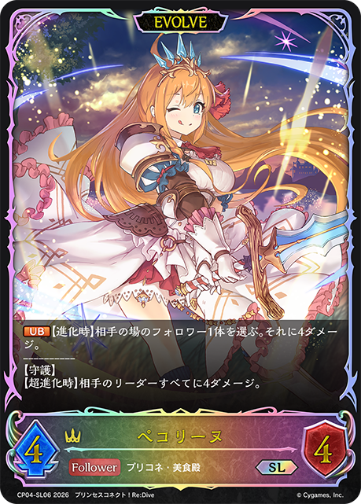
+2+2+2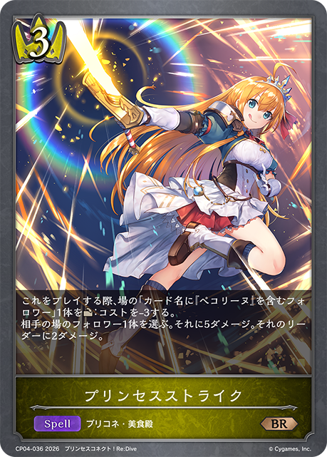
+2+2+2 +2
+2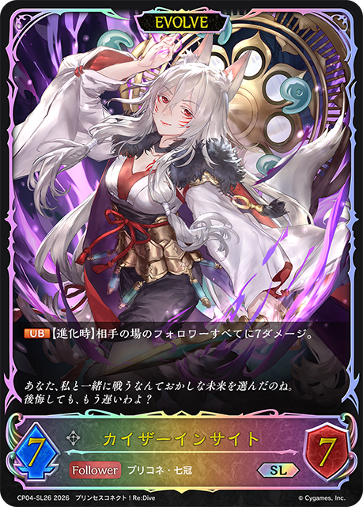
+1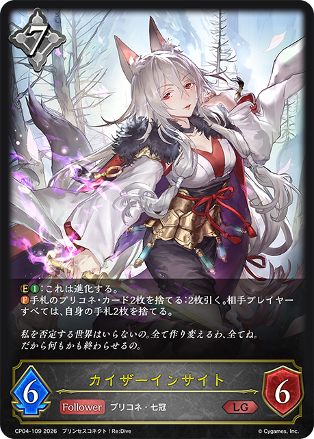
+1+1-3-3-3-3-2-2-2-1-1+2+2+1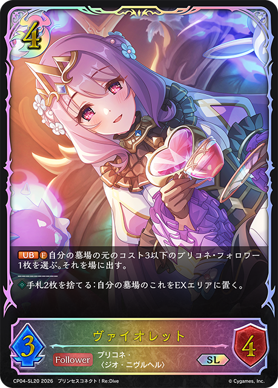
+1+1-3-3-2-1-1+2+1+1+1-2-1-1-1+3+2+1+1+1+1+1-3-3-3-1-1-1-1+2+2+2+1+1+1-3-3-3+2+2+1+1+1+1-3-3-1-1+2+1+1+1-2-1-1-1+1+1+1+1+1-3-1-1+2+2+2+1+1+1-3-3-3+3+2+1-2-1-1-1-1+2+2+1+1+1+1-3-3-1-1+2+2+2+2+2+1-3-3-3-1-1+2+1+1+1-2-2-1+3+3+1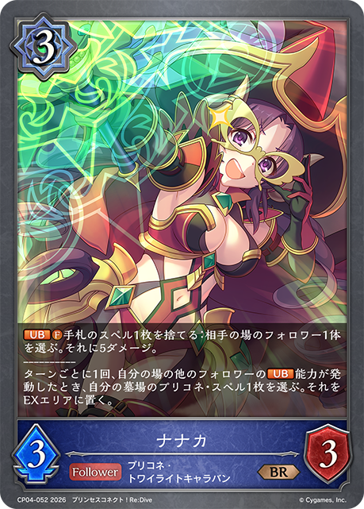
+1-2-1-1-1-1-1-1+2+2+2+1+1+1+1+1-3-3-3-1-1 +2
+2 +2+1+1+1+1+1-3-3-3+2+2+2+1+1
+2+1+1+1+1+1-3-3-3+2+2+2+1+1 +1+1
+1+1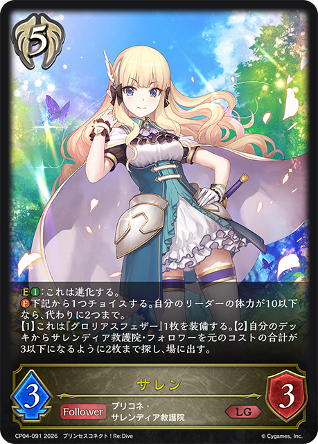
+1+1-3-3-3-1-1-1+3+3+1-2-1-1-1-1-1+2+2+1+1+1+1-3-2-1-1-1+2+2+2+2+1+1-3-3-3-1-1-1+1-1+2+2+2+1+1+1-3-3-3+2+2+2+1+1+1-3-3-3+1+1+1+1-2-1-1+3+3+1+1-2-1-1-1-1-1-1+3+1 +1+1+1-3-2-1-1+2+2+2+1+1+1+1+1-3-3-3-1-1+2+2+2+1+1+1+1+1-3-3-3-1-1+2+2+2+2+1+1+1-3-3-3-2-2+2+2+2+1+1+1-3-3-3+2+2+2+1+1+1+1+1-3-3-3-1-1+2+2+2+1+1+1-3-3-3-1-1+2+2+2+2+1+1+1-3-3-3-1-1+2+1+1+1-2-1-1-1+3+3+2+2+1-3-2-1-1-1-1-1-1+2+2+1+1+1
+1+1+1-3-2-1-1+2+2+2+1+1+1+1+1-3-3-3-1-1+2+2+2+1+1+1+1+1-3-3-3-1-1+2+2+2+2+1+1+1-3-3-3-2-2+2+2+2+1+1+1-3-3-3+2+2+2+1+1+1+1+1-3-3-3-1-1+2+2+2+1+1+1-3-3-3-1-1+2+2+2+2+1+1+1-3-3-3-1-1+2+1+1+1-2-1-1-1+3+3+2+2+1-3-2-1-1-1-1-1-1+2+2+1+1+1 +1+1-3-3-3-1-1+3+3+1+1-2-1-1-1-1-1-1+2+2+2+1+1+1+1-3-3-2-1-1+1-1+2+1+1-2-1-1+3+2+1+1+1-3-2-1-1-1+2+2+2+1+1+1-3-2-2-1-1+3+2+1+1+1+1+1-3-3-3-1-1-1-1
+1+1-3-3-3-1-1+3+3+1+1-2-1-1-1-1-1-1+2+2+2+1+1+1+1-3-3-2-1-1+1-1+2+1+1-2-1-1+3+2+1+1+1-3-2-1-1-1+2+2+2+1+1+1-3-2-2-1-1+3+2+1+1+1+1+1-3-3-3-1-1-1-1 +2+2
+2+2 +2-2-1-1-1-1+1+1+1+1+1-3-1-1+3+1+1-3-2-1-1-1+3+3+2+2+1+1+1-3-3-3-1-1-1-1+2+1+1+1-3-1-1+2+1+1+1-2-1-1-1+3+3+3+1-3-2-1-1-1-1-1+1+1+1+1-2-1-1+2+2+2+1+1+1+1+1-3-3-3-1-1+3+2+1+1+1+1+1-3-3-3-2-2+1+1+1-2-1-1+2+2+2+1+1+1
+2-2-1-1-1-1+1+1+1+1+1-3-1-1+3+1+1-3-2-1-1-1+3+3+2+2+1+1+1-3-3-3-1-1-1-1+2+1+1+1-3-1-1+2+1+1+1-2-1-1-1+3+3+3+1-3-2-1-1-1-1-1+1+1+1+1-2-1-1+2+2+2+1+1+1+1+1-3-3-3-1-1+3+2+1+1+1+1+1-3-3-3-2-2+1+1+1-2-1-1+2+2+2+1+1+1 +1-3-3-2-1-1+2+2+1+1+1+1+1-3-3-3-1-1+2+2+2+1+1+1-3-3-3+2+2+1+1+1-3-1-1-1-1+2+2+1+1+1+1-3-3-1-1+2+2+1+1+1-2-1-1-1-1-1+3+3
+1-3-3-2-1-1+2+2+1+1+1+1+1-3-3-3-1-1+2+2+2+1+1+1-3-3-3+2+2+1+1+1-3-1-1-1-1+2+2+1+1+1+1-3-3-1-1+2+2+1+1+1-2-1-1-1-1-1+3+3 +2
+2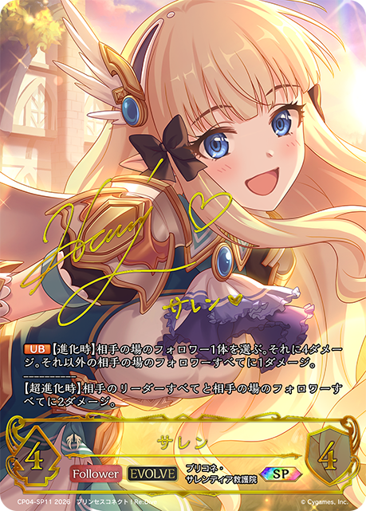
+1+1+1-3-2-2-2-1-1+2+2+1+1+1+1+1-3-3-3-1-1+2+2+2+1+1+1+1+1-3-3-3-1-1+2+2+2+1+1+1-3-3-3+2+2+1+1+1+1-3-3-3-1+2+2+2+1+1+1+1-3-3-2-1-1+2+2+2+1+1+1-3-3-3+2+2+2+1+1+1+1-3-3-3-1+1+1+1+1-2-1-1+3+3+3+1+1+1+1-3-3-2-2-2-1+3+2+2+2+1+1+1-3-3-3-2-2-1-1+1+1+1+1+1-3-1-1+2+2+2+1+1+1+1+1-3-2-2-2-2+1+1+1+1+1-3-1-1+1+1+1+1+1-3-1-1+3+2+1-3-2-1+3+3+1+1+1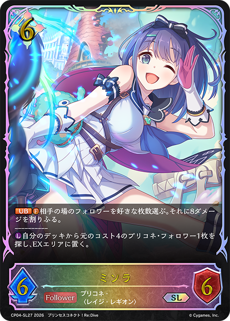
+1-3-3-2-2-2-1+1+1+1+1-2-1-1+2+1+1+1+1+1+1+1-3-3-3+2+1+1-2-1-1+2+2+2+2+1+1+1-3-3-3-1-1+2+2+2+2+1+1+1-3-3-3-1-1-1-1+2+2+2+2+2+1+1-3-3-2-1-1-1-1+2+2+2+1+1+1+1-3-3-2-1-1+2+2+2+1+1+1+1-3-3-3-1+2+1+1+1-2-1-1-1+3+3+2+2+1+1-3-3-2-1-1-1-1+2+2+1+1+1-3-3-3+2+2+2+2+2+1+1+1-3-3-3-2-2+1+1+1+1-2-1-1+2+1+1-2-1-1+1-2-1+3+2+2+1+1+1+1-3-3-3-1-1+2+2+2+1+1+1+1-3-3-2-1-1+3+3+2+1+1+1-3-3-3-1-1+2+2+2+2+1+1+1-3-3-3-1-1-1-1+3+3+2+1+1+1-3-3-3-1-1+3+2+1+1-2-1-1-1-1-1+1+1+1+1+1-3-1-1+3+1-3-1+2+2+2+2+1+1+1-3-3-3-1-1-1-1+2+2+1+1+1+1+1-3-3-3-1-1+1+1+1-1-1-1+1+1-1-1+2+2+2+1+1+1-3-3-3+2+2+2+2+2+1-3-3-3-1-1+2+2+1+1+1+1+1-3-3-3-1-1+2+2+2+1+1+1+1-3-3-2-1-1+2+1+1+1-3-1-1+2+2+1+1+1-3-2-2-1-1+3+2+1+1+1-3-3-3-1-1+2+2+2+1+1-3-3-1-1+3+2+2+2+1+1+1-3-3-3-2-2-1-1+1+1+1+1+1-3-1-1+2+1+1+1-3-1-1-1-1+3+1+1+1+1-3-2-2-2-1+3+2+2+2+1+1+1+1-3-3-3-1-1-1-1+2+2+2+1+1+1+1-3-3-2-1-1+2+2+2+2+1+1+1-3-3-3-1-1+2+2+2+1+1-3-3-1-1+2+2+2+2+1+1+1-3-3-3-1-1+2+2+2+2+2+1+1+1-3-3-3-2-2+2+2+2+1+1+1+1+1-3-3-3-1-1+2+2+2+1+1-3-3-3-1-1+1+1+1+1+1+1-3-2-1+2+2+2+1+1+1+1+1-3-3-3-1-1+2+2+1+1-2-2-1-1+3+2+2+2+2+1+1-3-3-3-1-1-1-1+3+3+2+1+1+1+1+1-3-2-2-2-1-1-1-1+3+3+2+2+2+1+1+1+1-3-3-3-2-2-1-1+2+1+1+1+1+1+1-3-3-2+2+2+2+2+2+1-3-3-3-1-1+2+1+1+1-2-1-1-1+2+2+1+1+1+1+1-3-3-3-1-1+2+2+2+2+1+1-3-3-3-1+2+2+1+1-1-1-1-1-1-1+3+3+2+2+2+2+1+1-3-3-3-2-2-2-1+2+1+1+1-2-1-1-1+3+3+2+1+1+1-3-3-2-2-2-1-1+2+2+2+2+2+2+1-3-3-3-1-1-1-1+2+2+2+2+1+1+1-3-3-3-1-1-1-1+2+2+2+2+2+2+1-3-3-3-1-1-1-1+2+2+2+1+1+1+1+1-3-3-3-1-1+1-1+2+2+2+2+1+1+1-3-3-3-1-1+2+1+1+1-3-1-1+3+3+3+3+3+3+3+1+1-3-3-3-3-2-2-2-2-2-1+2+2+2+1-2-1-1-1-1-1+3+2+1+1+1+1-3-3-2-2-2+2+1+1+1-3-1-1+2+2+2+1+1+1-3-3-3+2+2+2+2+1+1+1-3-3-3-1-1-1-1+3+1-3-1+3+3+3+1+1+1+1-3-3-2-2-2-1+2+2+2+2+2+2+1+1+1-3-3-3-3-3-1-1+3+3+2+1+1+1-3-2-1-1-1-1-1-1+2+1+1-3-3-2+2+2+2+1-3-1-1-1-1+2+2+2+1+1+1+1+1-3-3-3-1-1+2+2+2+1+1+1+1+1-3-3-3-1-1+2+2+2+1+1+1-3-3-3+3+2+1+1+1-3-3-3-1-1+2+1+1+1-2-1-1-1+3+3+2+1+1+1-3-3-3-1-1+3+3+2+1+1+1-3-3-3-1-1+2+2+2+1+1+1-3-3-2-1+2+2+2+2+1+1-3-3-3-1-1-1-1+1+1+1+1-2-1-1+2+2+2+1+1+1+1+1-3-3-3-1-1+2+2+2+1+1+1+1-3-3-2-1-1+2+2+2+2+2+1+1-3-3-3-1-1-1-1-1+3+2+2+2+2+1+1-3-3-3-1-1-1-1+2+2+2+2+2+1+1-3-3-3-1-1-1+2+2+2+2+1+1+1-3-3-3-1-1-1-1+3+1+1-3-2-1-1-1+2+2+2+1+1+1-3-3-3+2+2+1+1+1+1-3-3-2-1-1+2+2+2+1+1+1-3-3-3-1+2+2+2+2+1-3-3-3-1-1-1+2+2+2+1+1+1+1+1-3-3-3-1-1+3+2+2+1+1+1+1-3-3-3-1-1+2+2+2+1+1+1+1+1-3-3-3-1-1+2+2+2+1+1+1+1+1-3-3-3-1-1+2+2+2+1+1+1+1+1+1+1-3-3-2-1-1-1-1-1+2+2+1+1+1-3-3-1+2+2+2+2+1+1-3-3-2-1-1+2+2+2+1+1+1+1-3-3-2-1-1+2+2+1+1+1+1+1+1+1-3-3-3-1-1-1-1+2+1+1-2-1-1+3+3+2+1+1+1-3-3-3-1-1+2+2+2+2+1+1-3-3-2-1+2+2+2+1+1+1+1+1-3-3-3-1-1+3+3+1+1+1+1-2-2-2-1-1-1-1+2+2+2+2+2+2+1-3-3-3-2-2-1-1+2+2+2+1+1+1+1+1-3-3-3-1-1+3+2+2+2+1-3-3-3-1-1-1-1+2+2+2+1+1+1+1-3-3-3-1+3+2+1+1+1+1-3-2-2-1-1+3+3+2+1+1+1-3-3-3-1-1+2+2+2+1-3-1-1-1-1+2+2+2+2+2+2+1-3-3-3-1-1-1-1+2+2+2+1+1+1-3-3-3+3+1+1+1+1-3-2-2-2-1+2+2+2+2+1+1-3-3-3-1-1-1+3+3+2+1+1+1+1-3-2-2-2-1-1-1+3+3+2+1+1+1-3-3-3-1-1+3+2+1+1+1-3-3-3-1-1+3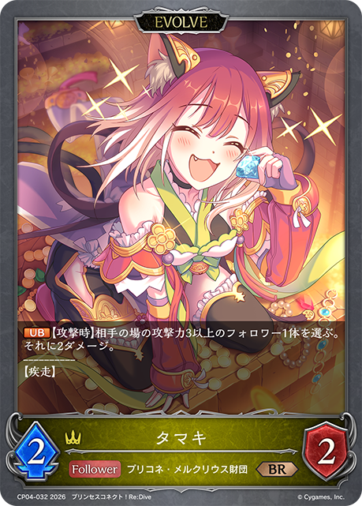
+2+2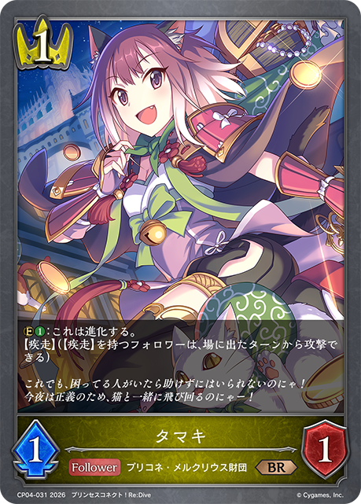
+2+2+1+1+1+1-3-3-3-2-2-2-1-1-1+3+3+2+1+1+1-3-3-3-1-1+2+2+2+2+1+1+1-3-3-3-1-1-1-1+2+1+1+1+1+1+1+1-3-2-2-1-1+2+2+2+2+1+1-3-3-2-1| 图片 | 平均张数 | 使用率 | 0张比例 | 1张比例 | 2张比例 | 3张比例 |
|---|---|---|---|---|---|---|
|
3.00 | 100.0% | 0.0% | 0.0% | 0.0% | 100.0% |
|
3.00 | 100.0% | 0.0% | 0.0% | 0.0% | 100.0% |
|
3.00 | 100.0% | 0.0% | 0.0% | 0.0% | 100.0% |
|
3.00 | 100.0% | 0.0% | 0.0% | 0.0% | 100.0% |
|
3.00 | 100.0% | 0.0% | 0.0% | 0.4% | 99.6% |
|
2.99 | 100.0% | 0.0% | 0.0% | 0.9% | 99.1% |
|
2.77 | 100.0% | 0.0% | 0.0% | 23.3% | 76.7% |
|
2.60 | 100.0% | 0.0% | 0.9% | 38.1% | 61.0% |
|
2.98 | 99.6% | 0.4% | 0.0% | 0.4% | 99.1% |
|
2.98 | 99.6% | 0.4% | 0.0% | 0.9% | 98.7% |
|
2.62 | 97.3% | 2.7% | 2.7% | 24.2% | 70.4% |
|
1.32 | 91.0% | 9.0% | 49.8% | 41.3% | 0.0% |
|
2.08 | 77.1% | 22.9% | 7.6% | 8.1% | 61.4% |
|
0.86 | 50.2% | 49.8% | 19.3% | 26.5% | 4.5% |
|
0.86 | 49.3% | 50.7% | 19.7% | 22.9% | 6.7% |
|
1.13 | 46.6% | 53.4% | 6.3% | 14.8% | 25.6% |
|
0.70 | 35.4% | 64.6% | 9.4% | 17.9% | 8.1% |
|
0.57 | 25.6% | 74.4% | 2.2% | 14.8% | 8.5% |
| 0.09 | 6.7% | 93.3% | 4.0% | 2.7% | 0.0% | |
|
0.08 | 6.7% | 93.3% | 5.4% | 1.3% | 0.0% |
|
0.10 | 6.3% | 93.7% | 2.7% | 3.1% | 0.4% |
| 0.04 | 3.6% | 96.4% | 3.1% | 0.4% | 0.0% | |
|
0.07 | 3.1% | 96.9% | 0.0% | 2.2% | 0.9% |
|
0.07 | 2.7% | 97.3% | 0.0% | 0.9% | 1.8% |
|
0.04 | 1.8% | 98.2% | 0.0% | 1.8% | 0.0% |
|
0.02 | 1.3% | 98.7% | 0.9% | 0.4% | 0.0% |
| 0.01 | 1.3% | 98.7% | 1.3% | 0.0% | 0.0% | |
| 0.01 | 1.3% | 98.7% | 1.3% | 0.0% | 0.0% | |
| 0.01 | 0.9% | 99.1% | 0.4% | 0.4% | 0.0% | |
| 0.01 | 0.4% | 99.6% | 0.0% | 0.4% | 0.0% | |
| 0.00 | 0.4% | 99.6% | 0.4% | 0.0% | 0.0% |
| 图片 | 平均张数 | 使用率 | 0张比例 | 1张比例 | 2张比例 | 3张比例 |
|---|---|---|---|---|---|---|
|
2.66 | 97.3% | 2.7% | 2.7% | 20.6% | 74.0% |
|
1.36 | 91.0% | 9.0% | 47.1% | 42.6% | 1.3% |
|
2.09 | 78.0% | 22.0% | 2.2% | 21.1% | 54.7% |
|
0.95 | 53.4% | 46.6% | 15.7% | 33.6% | 4.0% |
|
0.89 | 49.8% | 50.2% | 18.8% | 22.9% | 8.1% |
|
0.91 | 35.0% | 65.0% | 1.3% | 10.8% | 22.9% |
| 0.62 | 28.3% | 71.7% | 3.6% | 15.2% | 9.4% | |
|
0.27 | 12.6% | 87.4% | 3.1% | 4.5% | 4.9% |
| 0.05 | 4.9% | 95.1% | 4.5% | 0.4% | 0.0% | |
|
0.07 | 3.1% | 96.9% | 0.4% | 1.3% | 1.3% |
|
0.04 | 2.2% | 97.8% | 0.4% | 1.3% | 0.4% |
|
0.02 | 1.3% | 98.7% | 0.9% | 0.4% | 0.0% |
|
0.02 | 1.3% | 98.7% | 0.9% | 0.4% | 0.0% |
| 0.01 | 1.3% | 98.7% | 1.3% | 0.0% | 0.0% | |
|
0.01 | 1.3% | 98.7% | 1.3% | 0.0% | 0.0% |
| 0.01 | 0.4% | 99.6% | 0.0% | 0.4% | 0.0% |